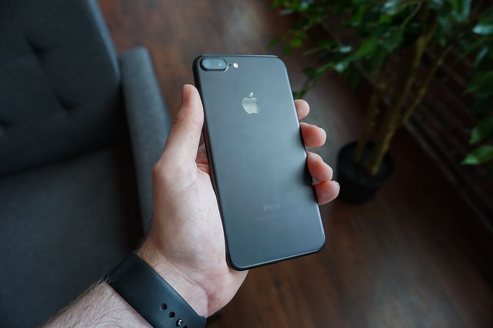
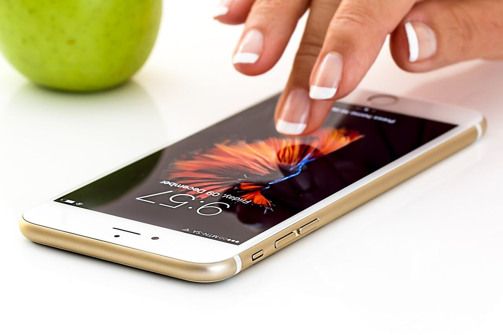
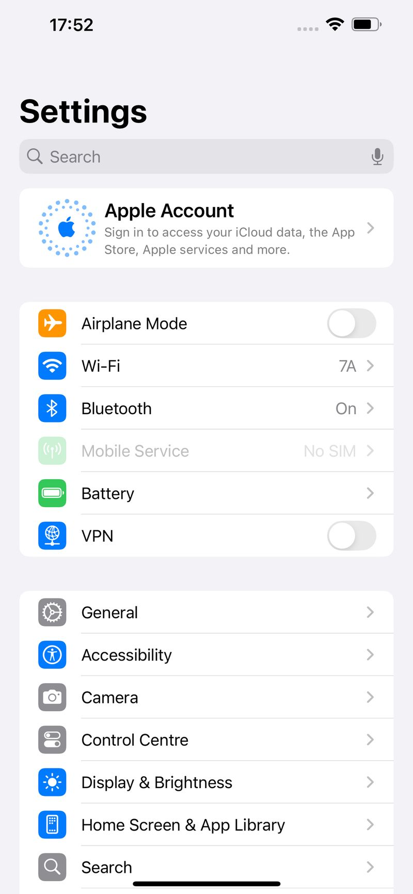

Cara paling cepat mengubah foto HEIC ke JPG di iPhone adalah lewat aplikasi File bawaan: simpan foto ke File, tekan lama fotonya, pilih Tindakan Cepat, lalu Ubah Gambar dan JPEG. Tidak perlu instal aplikasi dan tidak perlu bayar. Di Android, jalurnya beda karena HP Android tidak menyimpan foto sebagai HEIC, jadi kamu biasanya hanya perlu membuka atau mengonversi foto kiriman dari iPhone. Artikel ini menjelaskan langkahnya, plus satu pengaturan supaya foto baru langsung tersimpan sebagai JPG.
HEIC adalah format foto bawaan iPhone sejak iOS 11. Apple memakainya karena file HEIC menyimpan foto dengan kualitas yang sama dalam ukuran lebih hemat dibanding JPG. Masalahnya, banyak formulir pendaftaran, portal lamaran, dan aplikasi lama hanya menerima JPG atau PNG, sehingga foto HEIC ditolak atau pratinjaunya rusak. Kabar baiknya, kamu tidak perlu aplikasi berbayar: aplikasi File bawaan iPhone sudah bisa mengubah HEIC menjadi JPG. Yang penting, jangan hanya mengganti nama file, karena isi file tetap HEIC dan formulir tetap menolaknya.
Kenapa foto iPhone tersimpan sebagai HEIC dan kenapa sering ditolak?
iPhone menyimpan foto sebagai HEIC sejak iOS 11, dan perangkat yang bisa menangkap format ini mulai dari iPhone 7, menurut Apple Support. HEIC adalah nama file untuk foto HEIF, format yang memakai kompresi lebih efisien dibanding JPG. Di luar HP, ceritanya beda: banyak formulir upload bekerja dari daftar format yang diterima dan memeriksa isi file, bukan hanya namanya. Kalau HEIC tidak ada di daftar itu, file ditolak sebelum gambarnya dibaca.

Bagaimana cara mengubah HEIC ke JPG di iPhone tanpa aplikasi tambahan?
Cara paling rapi memakai aplikasi File, berlaku di iOS 16 ke atas. Buka aplikasi Foto, pilih foto yang mau diubah, lalu ketuk Bagikan dan Simpan ke File. Buka aplikasi File, tekan lama fotonya, ketuk Tindakan Cepat, lalu Ubah Gambar dan JPEG. Pilih ukuran Original bila kualitas penting buatmu, karena Small, Medium, dan Large memperkecil foto. File JPG baru muncul di samping file HEIC asli. Untuk banyak foto, ketuk ikon titik tiga di File, pilih Pilih, tandai fotonya, lalu ketuk Ubah Gambar.
Jalan kedua untuk satu foto adalah lewat lembar Bagikan. Buka foto di aplikasi Foto, ketuk Bagikan, lalu ketuk Opsi di bagian atas. Di bawah Format, pilih Most Compatible, lalu ketuk Selesai. Setelah itu kirim lewat Mail atau simpan ke File, dan salinan yang sampai sudah JPG. Kalau opsi Format tidak muncul di HP-mu, pakai cara File di atas.

Bagaimana cara mengubah HEIC ke JPG di HP Android?
HP Android tidak menyimpan foto sebagai HEIC, jadi file HEIC di HP Android hampir selalu kiriman dari pengguna iPhone. Langkah pertama, coba buka foto itu di Google Foto. Android mendukung codec HEIC dan HEIF sejak Android 9, dengan dukungan penuh pada Android 10. Kalau fotonya terbuka, ketuk Bagikan, lalu simpan ke File atau Drive.
Langkah kedua, pakai converter online gratis dari browser HP. Buka situs seperti AnyConv atau Berkasin, unggah file HEIC, lalu unduh sebagai JPG. Berkasin menyebut foto diproses di browser dan tidak dikirim ke server, dengan batas unggah 31 MB, dan data EXIF seperti lokasi dan waktu pengambilan tidak ikut tersimpan. AnyConv menyebut batas 100 MB per file dan file dihapus dari servernya setelah 1 jam. Jangan unggah foto berisi data pribadi seperti KTP ke converter online mana pun.
Langkah ketiga, bila kamu sering menerima file HEIC, instal satu aplikasi converter gratis dari Play Store, misalnya Luma. Buka aplikasinya, pilih foto HEIC, lalu simpan sebagai JPG. Aplikasi converter yang wajar hanya butuh akses penyimpanan, jadi hindari yang meminta akses kontak atau SMS. Sesudah selesai, hapus aplikasi yang tidak terpakai supaya HP tetap ringan, seperti anjuran di artikel cara mempercepat HP Android yang lemot.
Bagaimana supaya foto baru langsung tersimpan sebagai JPG?
Mengonversi foto lama tidak mengubah kebiasaan kamera, jadi ubah satu pengaturan di iPhone. Buka Pengaturan, ketuk Kamera, ketuk Format, lalu pilih Most Compatible. Menurut Apple Support, semua foto dan video baru sesudah itu memakai format JPEG atau H.264. Untuk kembali ke format hemat tempat, pilih High Efficiency di tempat yang sama. Ingat, pengaturan ini tidak mengubah foto yang sudah ada, dan file JPG baru biasanya lebih besar dari HEIC.
Ada pengaturan kedua yang sering tertukar dengan yang pertama. Buka Pengaturan, ketuk Foto, gulir ke bagian Transfer ke Mac atau PC, lalu pilih Otomatis. Pengaturan ini tidak mengubah apa yang disimpan kamera, hanya apa yang keluar dari HP saat memindahkan foto ke komputer lewat kabel. Dengan Otomatis, iPhone mengubah HEIC menjadi JPG selama transfer. Jadi, kalau masalahmu hanya foto ditolak saat pindah ke laptop Windows, cukup atur Transfer ke Otomatis dan biarkan kamera tetap di High Efficiency.

Apa yang tidak boleh dilakukan dan kapan converter online boleh dipakai?
Jangan mengganti nama file dari .heic menjadi .jpg secara manual. Nama berubah, isi file tetap HEIC, dan formulir yang memeriksa isi file tetap menolaknya. Periksa hasil konversi lewat aplikasi File: buka folder hasil dan pastikan ekstensinya .jpg atau .jpeg sebelum diunggah.
Converter online boleh dipakai untuk foto biasa seperti foto pemandangan atau foto produk tanpa data sensitif. Jangan pakai converter online untuk foto KTP, paspor, atau dokumen yang memuat nomor identitas dan alamat. Untuk dokumen seperti itu, pakai cara bawaan iPhone lewat File. Kalau formulir juga punya batas ukuran, misalnya 200 KB, konversi saja belum cukup. Untuk dokumen, kecilkan dulu dengan cara kompres PDF di HP dan laptop, dan untuk foto dokumen, cara scan dokumen di HP jadi PDF sering lebih rapi daripada memotret lalu mengonversi. Periksa lagi ekstensi dan ukuran berkas sebelum menekan tombol kirim.
Foto HEIC bukan foto rusak, ia hanya tersimpan dalam format yang belum diterima semua situs. Di iPhone, ubah lewat aplikasi File atau lembar Bagikan, lalu atur kamera ke Most Compatible supaya foto baru langsung JPG. Di Android, mulai dari Google Foto, lalu converter online atau aplikasi gratis. Simpan file HEIC asli sampai hasil JPG-nya sudah benar dan sudah diterima. Kalau kamu kehilangan foto yang sudah dikonversi, panduan cara mengembalikan foto yang terhapus di HP bisa membantu.
Baca juga: cara mengembalikan foto yang terhapus di HP kalau foto pentingmu hilang sesudah dikonversi, atau lihat artikel Other lainnya dan kumpulan artikel di blog.
Sumber dan Info Resmi
Fakta dan langkah di artikel ini merujuk ke sumber berikut:
- Apple Support: HEIF dan HEVC diperkenalkan di iOS 11 dan macOS High Sierra; perangkat yang bisa menangkap HEIF mulai iPhone 7; Pengaturan, Kamera, Format, Paling Kompatibel membuat foto dan video baru memakai JPEG atau H.264; foto lama tidak ikut berubah.
- TIKTAK.ID: HEIC format bawaan iPhone sejak iOS 11; tiga cara di iPhone dan tiga jalur di Android; foto HEIC hasil konversi bisa lebih besar dari aslinya.
- NaxaHub: cara File iPhone, simpan foto ke File, tekan lama, Tindakan Cepat, Ubah Gambar, pilih JPEG, berlaku iOS 16 ke atas dan bisa banyak foto sekaligus; mengganti nama file dari HEIC ke JPG bukan konversi; Android tidak menyimpan foto sebagai HEIC secara bawaan.
- Sepoin: Android mendukung codec HEIC dan HEIF sejak Android 9 dan dukungan penuh pada Android 10; aplikasi Luma di Play Store gratis untuk membuka dan mengonversi HEIC ke JPG.
- Berkasin: foto iPhone berformat HEIC sering ditolak portal pendaftaran dan situs lamaran; foto diproses di browser dan tidak dikirim ke server, sampai 30 foto tanpa watermark, ukuran piksel tetap; data EXIF seperti lokasi dan waktu pengambilan tidak ikut tersimpan di hasil konversi; batas unggah 31 MB.
- remover.bg: formulir upload memakai daftar format yang diterima dan memeriksa isi file, bukan hanya namanya; di lembar Bagikan iPhone ketuk Opsi, pilih Most Compatible, lalu Simpan ke File; Pengaturan, Aplikasi, Foto, Transfer ke Mac atau PC, Otomatis mengonversi saat transfer lewat kabel.
- The Tools Kit: dua pengaturan iPhone yang berbeda, Format Kamera mengubah apa yang disimpan kamera, Transfer ke Mac atau PC mengubah apa yang keluar dari HP saat transfer kabel; Most Compatible tidak mengubah foto lama; media yang dibagikan lewat AirDrop, Pesan, atau email bisa otomatis dibagikan dalam format yang lebih kompatibel seperti JPEG bila perangkat penerima tidak mendukung format baru.
- AnyConv: converter online HEIC ke JPG gratis, ukuran maksimum file 100 MB, mendukung konversi batch, file dihapus dari server setelah 1 jam menurut halamannya.